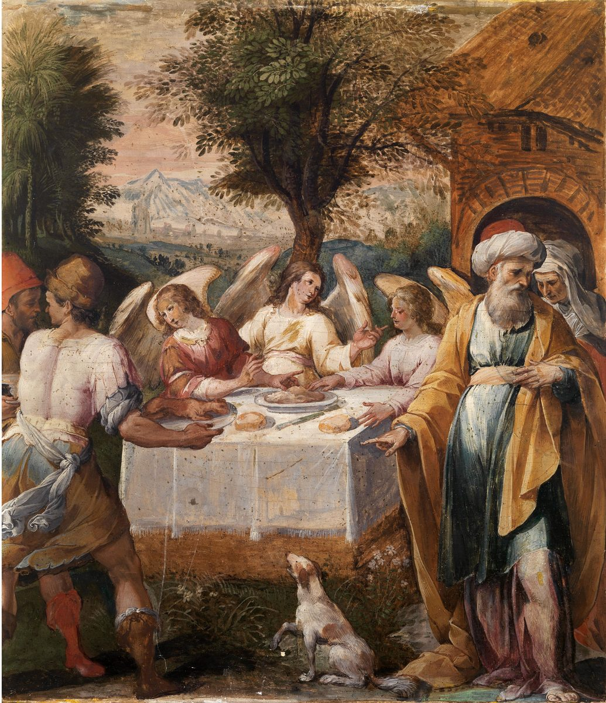

Hebreos 13 — La Traducción Mister

⚠ Nucci pinta la comida de Abraham en Mamre (Génesis 18, ya en estas páginas), la escena que está detrás de «algunos, sin saberlo, hospedaron ángeles» (versículo 2); Génesis llama a los visitantes «tres hombres», y el pintor les da alas.

Notas del traductor
«Que permanezca el amor fraternal. No olviden la hospitalidad, porque por ella algunos, sin saberlo, hospedaron ángeles». Philadelphía, «amor fraternal», está en cinco versículos, entre ellos Romanos 12:10 (diccionario). Philoxenía, «hospitalidad», literalmente amor a los forasteros, está en dos versículos, aquí y Romanos 12:13 (diccionario); las dos palabras van juntas, amor a los hermanos y amor a los forasteros. «Sin saberlo» es lanthánō, «pasar inadvertido»: la mujer de Lucas 8:47 vio «que no había pasado inadvertida» (diccionario). Abraham corrió al encuentro de «tres hombres» en Génesis 18:2 (ya en estas páginas), y Lot se levantó al encuentro de «los dos ángeles» en Génesis 19:1 (ya en estas páginas). «Permanezca» es ménō, el verbo de la ciudad «que permanezca» del versículo 14. La RV60 dice «Permanezca el amor fraternal»; la TNM 1987 dice «porque por ella algunos, sin saberlo, hospedaron a ángeles»; la NVI dice «Sigan amándose unos a otros fraternalmente».
«Acuérdense de los presos, como si estuvieran presos con ellos, y de los maltratados, puesto que también ustedes mismos están en un cuerpo». Los presos son los de Hebreos 10:34, «se compadecieron de los presos» (diccionario). Syndéō, «estar atado con», está en un solo versículo. Kakouchéō, «maltratar», está en dos versículos, aquí y los fieles «oprimidos, maltratados» de Hebreos 11:37 (diccionario). «En un cuerpo» no lleva artículo en griego; se lee como el cuerpo en que uno vive, capaz de sufrir como el de ellos, o como el cuerpo de la congregación. La RV60 dice «como que también vosotros mismos estáis en el cuerpo»; la TNM 1987 dice «puesto que ustedes mismos, también, todavía están en un cuerpo»; la NVI dice «como si fueran ustedes mismos los que sufren».
«Que el matrimonio sea honroso entre todos, y el lecho conyugal sin mácula; porque a los sexualmente inmorales y a los adúlteros los juzgará Dios». El griego no tiene verbo: puede ser una afirmación, «Honroso es el matrimonio», o, entre los mandatos que lo rodean, un mandato; esta página imprime el mandato e informa de la afirmación. «Entre todos» puede ser también «en todo». Amíantos, «sin mácula», está en cuatro versículos; el primero es el sumo sacerdote «santo, inocente, sin mácula» de Hebreos 7:26 (diccionario). «Sexualmente inmorales» es pórnos, como en Hebreos 12:16. El sustantivo moichós, «adúltero», está en tres versículos, entre ellos 1 Corintios 6:9 (diccionario). Robinson–Pierpont lee «pero» en lugar de «porque» (el aparato). La RV 1909 dice «Honroso es en todos el matrimonio, y el lecho sin mancilla»; la TNM 1987 dice «Que el matrimonio sea honorable entre todos»; la NVI dice «porque Dios juzgará a los adúlteros y a todos los que cometen inmoralidades sexuales».
⚠ «Que su manera de vivir esté libre del amor al dinero … porque él mismo ha dicho: ‘No te soltaré jamás, ni jamás te abandonaré’. Así que decimos con buen ánimo: ‘Jehová es mi ayudador; no temeré. ¿Qué me hará el hombre?’». Aphilárgyros, «libre del amor al dinero», está en dos versículos; el otro es el supervisor «no amante del dinero» de 1 Timoteo 3:3 (diccionario). «Contentos» es el verbo de «conténtense con su paga» en Lucas 3:14. La promesa es el lenguaje de Deuteronomio 31:6, «No te soltará ni te abandonará», dicho de Jehová, y de Josué 1:5, donde Jehová lo dice él mismo: «no te soltaré ni te abandonaré». Hebreos tiene la primera persona y un «jamás» doble; su forma exacta no es el griego de Deuteronomio 31:6, Josué 1:5 ni Génesis 28:15 (ya en estas páginas) (todos comprobados), y se dice que la misma forma está en Filón (dato referido, no comprobado aquí). La segunda cita es el Salmo 118:6, en el Salterio griego 117:6, «Kýrios es mi ayudador, y no temeré lo que me haga el hombre»; el hebreo dice «Jehová está por mí; no temeré; ¿qué puede hacerme el hombre?» (los dos comprobados). El Salmo tiene el nombre divino, así que esta página imprime «Jehová». Tregelles, Nestle–Aland 28 y Robinson–Pierpont tienen la «y» del Salterio, y Westcott–Hort la omiten (el aparato); con ella la línea puede leerse como la lee el Salterio, «no temeré lo que me haga el hombre», y sin ella como una pregunta. Boēthós, «ayudador», está en un solo versículo; su verbo es el «socorrer» de Hebreos 2:18 (diccionario). La RV60 dice «El Señor es mi ayudador; no temeré Lo que me pueda hacer el hombre»; la RV 1909 dice «No te desampararé, ni te dejaré»; la TNM 1987 dice «Jehová es mi ayudante».
«Acuérdense de sus dirigentes, que les hablaron la palabra de Dios; considerando el resultado de su conducta, imiten su fe». «Dirigentes» es hēgoúmenoi, el participio de los «hombres dirigentes» de Hechos 15:22, aquí y en los versículos 17 y 24 (diccionario). «Hablaron» está en pasado, y «el resultado» se lee como el fin de su vida o como el fruto de cómo vivieron. Ékbasis, «resultado», está en dos versículos; el otro es «la salida» de 1 Corintios 10:13 (diccionario). «Conducta» es anastrophē, la «antigua manera de vivir» de Pablo en Gálatas 1:13. El verbo miméomai, «imitar», está en tres versículos, dos de ellos en 2 Tesalonicenses 3:7 y 3:9; su sustantivo son los «imitadores de los que por la fe y la paciencia heredan las promesas» de Hebreos 6:12. La RV60 dice «Acordaos de vuestros pastores»; la TNM 1987 dice «Acuérdense de los que llevan la delantera entre ustedes»; la NVI dice «Acuérdense de sus dirigentes».
«Jesucristo es el mismo ayer y hoy, y por los siglos». El griego no tiene verbo; «es» se suple. «El mismo» es ho autós, las palabras del Salmo 102 en Hebreos 1:12, «pero tú eres el mismo, y tus años no se acabarán». Echthés, «ayer», está en tres versículos; los otros son «Ayer a la hora séptima» en Juan 4:52 y «como mataste ayer al egipcio» en Hechos 7:28 (diccionario). «Por los siglos» es eis toús aiōnas, «hasta las edades». La RV60 dice «Jesucristo es el mismo ayer, y hoy, y por los siglos»; la RV 1909 dice lo mismo, «Jesucristo es el mismo ayer, y hoy, y por los siglos»; la NVI dice «Jesucristo es el mismo ayer, hoy y por siempre».
«No se dejen llevar por enseñanzas diversas y extrañas; porque es bueno que el corazón sea afirmado por la gracia, no por alimentos, de los que no sacaron provecho los que andan en ellos». «Diversas» es la palabra de las «diversas obras de poder» de Hebreos 2:4; «extrañas» es xénos, los «extranjeros» de Hebreos 11:13 (diccionario). Parapherō, «llevar», está en dos versículos; el otro son las nubes «llevadas por los vientos» de Judas 12. «Afirmado» es el verbo de «nos fue confirmada» en Hebreos 2:3. Los «alimentos» son los de Hebreos 9:10, «comidas y bebidas y diversos lavamientos»; de qué alimentos se trata, la carta no lo dice, y las lecturas difieren. «Sacar provecho» es el verbo de Hebreos 4:2, «la palabra que oyeron no les aprovechó». Robinson–Pierpont lee «los que anduvieron» (el aparato). La RV60 dice «No os dejéis llevar de doctrinas diversas y extrañas»; la TNM 1987 dice «no por cosas de comer»; la NVI dice «y no por alimentos rituales».
⚠ «Tenemos un altar del cual no tienen derecho a comer los que sirven a la tienda». Thysiastērion, «altar», es la palabra de Hebreos 7:13, «de la cual nadie ha atendido al altar» (diccionario). La carta no dice qué es el altar: se ha leído como la cruz, como la mesa del Señor, y como el altar celestial del sacrificio de Cristo mismo, y esta página no elige. «Los que sirven» es el verbo de Hebreos 8:5, «Estos sirven a una copia y sombra». La RV60 dice «del cual no tienen derecho de comer los que sirven al tabernáculo»; la TNM 1987 dice «los que efectúan servicio sagrado en la tienda»; la NVI dice «los que ofician en el santuario».
«Porque los cuerpos de aquellos animales cuya sangre es llevada al santuario por el sumo sacerdote por el pecado son quemados fuera del campamento. Por eso también Jesús … padeció fuera de la puerta. Salgamos, pues, a él fuera del campamento, llevando su oprobio». La ley es Levítico 16:27, el Día de la Expiación: el becerro y el macho cabrío «cuya sangre fue llevada para hacer expiación en el lugar santo, serán llevados fuera del campamento». «El santuario» es ta hágia, como en Hebreos 9:12. «Fuera de la puerta» concuerda con Juan 19:20, «el lugar donde crucificaron a Jesús estaba cerca de la ciudad». Parembolē, «campamento», está en diez versículos; seis son el «cuartel» romano de Jerusalén, como en Hechos 21:34, y uno los «ejércitos» de Hebreos 11:34 (diccionario). Oneidismós, «oprobio», está en cinco versículos, entre ellos los «insultos» de Hebreos 10:33 y «el oprobio del Ungido» en Hebreos 11:26 (diccionario). La NVI dice «llevando la deshonra que él llevó»; la TNM 1987 dice «soportando el vituperio que él soportó»; la RV 1909 dice «Salgamos pues á él fuera del real».
«Porque no tenemos aquí una ciudad que permanezca, sino que buscamos la que ha de venir». «Que permanezca» es el verbo ménō, como en «una posesión mejor y que permanece» de Hebreos 10:34. «Buscamos» es el verbo de Hebreos 11:14, «buscan una patria». La ciudad es la de Hebreos 11:10, 11:16 y 12:22. La RV60 dice «porque no tenemos aquí ciudad permanente»; la TNM 1987 dice «sino que buscamos solícitamente la que ha de venir»; la NVI dice «sino que buscamos la ciudad venidera».
⚠ «Por medio de él, pues, ofrezcamos siempre a Dios un sacrificio de alabanza, es decir, el fruto de labios que confiesan su nombre. Y no olviden hacer el bien y compartir, porque de tales sacrificios se agrada Dios». «Un sacrificio de alabanza» es el griego de Levítico 7:12, donde el hebreo dice «el sacrificio de acción de gracias», y del Salmo 50:14 y 50:23, 49:14 y 49:23 en el Salterio griego (todos comprobados). Aínesis, «alabanza», está en un solo versículo del Nuevo Testamento (diccionario). «El fruto de labios» es el griego de Oseas 14:3, 14:2 en las Biblias en castellano: «pagaremos el fruto de nuestros labios», donde el hebreo dice «pagaremos becerros, nuestros labios» (los dos comprobados); la palabra hebrea para «becerros», parim, empieza con las letras de peri, «fruto». «Confesar» es homologéō, la raíz de la «confesión» de Hebreos 4:14 y 10:23 (diccionario). Westcott–Hort omiten «pues» (el aparato). Eupoiía, «hacer el bien», está en un solo versículo (diccionario). «Compartir» es koinōnía, la «colecta» para los pobres de Romanos 15:26 (diccionario). «Se agrada» es el verbo de Enoc, que «había agradado a Dios», en Hebreos 11:5. La RV60 dice «fruto de labios que confiesan su nombre»; la TNM 1987 dice «el fruto de labios que hacen declaración pública de su nombre»; la RV 1909 dice «Y de hacer bien y de la comunicación no os olvidéis».
«Obedezcan a sus dirigentes y cedan ante ellos, porque ellos velan por sus almas como quienes han de rendir cuenta, para que lo hagan con gozo y no gimiendo, porque eso no les sería de provecho». «Obedezcan» es peíthesthe, de peíthō, cuya pasiva significa «estar persuadido»: el mismo verbo es «estamos persuadidos» en el versículo 18. Hypeíkō, «ceder», está en un solo versículo (diccionario). El verbo agrypnéō, «velar», literalmente mantenerse despierto, está en cuatro versículos, entre ellos «¡Manténganse despiertos!» en Marcos 13:33 (diccionario). «Rendir cuenta» es la frase de Mateo 12:36, «darán cuenta de ella en el día del juicio». El verbo stenázō, «gemir», está en seis versículos, entre ellos «gemimos por dentro» en Romanos 8:23. Alysitelēs, «sin provecho», está en un solo versículo (diccionario). La RV60 dice «Obedeced a vuestros pastores, y sujetaos a ellos»; la TNM 1987 dice «y no con suspiros, por cuanto esto les sería gravemente dañoso a ustedes»; la NVI dice «Obedezcan a sus dirigentes y sométanse a ellos».
«Oren por nosotros; porque estamos persuadidos de que tenemos buena conciencia, deseando conducirnos bien en todo. Y les exhorto con más insistencia a hacer esto, para que yo les sea restituido más pronto». Robinson–Pierpont lee «confiamos» en lugar de «estamos persuadidos» (el aparato). «Conciencia» es la palabra de Hebreos 9:9, 9:14 y 10:22. «Conducirnos» es el verbo de la «conducta» del versículo 7. El escritor pasa de «nosotros» a «yo», como en Hebreos 11:32, «Me faltará el tiempo». «Restituido» es apokathístēmi, el verbo de «restauras el reino a Israel» en Hechos 1:6 (diccionario); qué retiene lejos al escritor, la carta no lo dice. La RV60 dice «pues confiamos en que tenemos buena conciencia»; la TNM 1987 dice «porque confiamos en que tenemos una conciencia honrada»; la NVI dice «para que se me permita reintegrarme a ustedes cuanto antes».
⚠ «Y que el Dios de la paz, que hizo subir de entre los muertos al gran pastor de las ovejas por la sangre de un pacto eterno, nuestro Señor Jesús …». La frase ho theós tēs eirēnēs, «el Dios de la paz», está en cinco versículos; los otros cuatro son de Pablo, como Romanos 16:20 y 1 Tesalonicenses 5:23. «Hizo subir» es anágō, como en «para hacer subir a Cristo de entre los muertos» de Romanos 10:7. La línea hace eco del griego de Isaías 63:11, «¿Dónde está el que hizo subir del mar al pastor de las ovejas?», donde el hebreo dice «los pastores de su rebaño», en plural, del tiempo de Moisés (los dos comprobados). «Pastor» es poimēn, el «buen pastor» de Juan 10:11 (diccionario). «La sangre del pacto» es la frase de Hebreos 9:20 y 10:29; Zacarías 9:11 dice «por la sangre de tu pacto he sacado a tus presos de la cisterna», e Isaías 55:3 «un pacto eterno» (los dos comprobados en hebreo y en griego). «Eterno» es la palabra de la «redención eterna» de Hebreos 9:12 y de la «herencia eterna» de 9:15. «Por la sangre» puede ir con «hizo subir» o con «el gran pastor»; las lecturas difieren. La RV60 dice «por la sangre del pacto eterno»; la TNM 1987 dice «con la sangre de un pacto eterno»; la RV 1909 dice «por la sangre del testamento eterno».
«… los equipe en todo bien para hacer su voluntad, haciendo en nosotros lo que es agradable delante de él, por medio de Jesucristo, a quien sea la gloria por los siglos. Amén». «Equipar» es katartízō, el «me preparaste» de Hebreos 10:5 y el «puestos en orden» de Hebreos 11:3 (diccionario). «Agradable» es euárestos, la raíz de «de manera agradable» en Hebreos 12:28 y de «se agrada» en el versículo 16 (diccionario). Tres lugares difieren: Tregelles y Robinson–Pierpont tienen «toda obra buena» y «en ustedes»; Westcott–Hort y Nestle–Aland 28 tienen «en nosotros»; y los cuatro tienen «por los siglos de los siglos», donde el texto impreso tiene «por los siglos» (el aparato). «A quien» puede ser Dios, el sujeto de la frase, o Jesucristo, el nombre más cercano; las lecturas difieren. La RV60 dice «os haga aptos en toda obra buena»; la TNM 1987 dice «los equipe con toda cosa buena para hacer su voluntad»; la NVI dice «Dios cumpla en nosotros lo que le agrada».
«Y les exhorto, hermanos, que soporten la palabra de exhortación, porque en efecto les he escrito en pocas palabras». La frase lógos tēs paraklēseōs está en dos versículos: aquí, y en Hechos 13:15, donde los jefes de la sinagoga piden a Pablo y a Bernabé una «palabra de aliento para el pueblo». «Exhortación» es la palabra de Hebreos 12:5. «Soportar» es anéchō, el «no soportarán la sana enseñanza» de 2 Timoteo 4:3 (diccionario). «En pocas palabras» es dia brachéōn; el adjetivo es el «por un poco de tiempo» de Hebreos 2:7 y 2:9. Una carta de trece capítulos en las Biblias modernas se llama a sí misma breve. «He escrito» es epistéllō, el verbo de «escribirles» en Hechos 15:20. La RV60 dice «Os ruego, hermanos, que soportéis la palabra de exhortación»; la TNM 1987 dice «a que soporten esta palabra de estímulo»; la RV 1909 dice «porque os he escrito en breve».
⚠ «Sepan que nuestro hermano Timoteo ha sido liberado; con él, si viene pronto, los veré. Saluden a todos sus dirigentes y a todos los santos. Los de Italia los saludan». Esta es la única mención de Timoteo en Hebreos. «Liberado» es apolýō, el verbo de «Pon en libertad a esos hombres» en Hechos 16:35 (diccionario); si Timoteo ha salido de la cárcel o ha sido despedido para un viaje, la carta no lo dice. Robinson–Pierpont omite «nuestro» (el aparato). «Los santos» son los hágioi de Hebreos 6:10. Italía, «Italia», está en cuatro versículos; los otros tres están en Hechos, entre ellos Áquila «recién llegado de Italia» en Hechos 18:2, las mismas palabras «de Italia» (enciclopedia). «Los de Italia» pueden ser italianos que están con el escritor fuera de Italia y saludan a los suyos, o gente en Italia que saluda a una congregación de otro lugar; las lecturas difieren, y esta página no elige. La RV 1909 dice «Los de Italia os saludan»; la TNM 1987 dice «Los de Italia les envían sus saludos»; la NVI dice «Los de Italia les mandan saludos».
«La gracia sea con todos ustedes». El mismo griego cierra Tito 3:15, «La gracia sea con todos ustedes». Tregelles y Robinson–Pierpont añaden «Amén» (el aparato). Después del último versículo la Geneva imprime «Written to the Hebrews from Italy, and sent by Timothy», «Escrita a los hebreos desde Italia, y enviada por Timoteo»: una nota posterior sobre la carta, que no forma parte del texto griego que esta traducción lee, ni del de Robinson–Pierpont (comprobado). La carta misma no nombra a su escritor. La RV60 dice «La gracia sea con todos vosotros. Amén.»; la TNM 1987 dice «La bondad inmerecida esté con todos ustedes».
Patrones que vale la pena recordar
Donde esta traducción conserva las palabras exactas: «amor fraternal» y «hospitalidad», juntos; «permanezca» y «que permanezca», un solo verbo; «los presos», como en 10:34; «maltratados», como en 11:37; «sexualmente inmorales», como en 12:16; «soltar», el verbo de Deuteronomio 31:6 y Josué 1:5 en estas páginas; «Jehová es mi ayudador»; «dirigentes»; «el mismo», como en 1:12; «el santuario»; «el campamento»; «oprobio», como en 11:26; «un sacrificio de alabanza»; «confesar»; «obedezcan» y «persuadidos», un solo verbo; «conducta»; «el Dios de la paz»; «la sangre de un pacto eterno»; «agradable»; «la palabra de exhortación»; y «los de Italia».
Ecos cumplidos. Los presos de Hebreos 10:34; maltratados de Hebreos 11:37; los sexualmente inmorales de Hebreos 12:16; el socorro de Hebreos 2:18; los imitadores de Hebreos 6:12; el mismo de Hebreos 1:12; los alimentos de Hebreos 9:10; el altar de Hebreos 7:13; el santuario de Hebreos 9:12; el oprobio de Hebreos 11:26; la posesión que permanece de Hebreos 10:34; la ciudad de Hebreos 12:22; la confesión de Hebreos 10:23; haber agradado a Dios de Hebreos 11:5; la conciencia de Hebreos 10:22; la sangre del pacto de Hebreos 10:29; eterno de Hebreos 9:15; de manera agradable de Hebreos 12:28; y la exhortación de Hebreos 12:5.
La carta entera. Hebreos se abre con Dios «habiendo hablado a los padres por los profetas» (Hebreos 1:1) y termina con «la palabra de exhortación». No nombra a su escritor ni el lugar donde se escribió; el único compañero del escritor que nombra es Timoteo. Sus palabras recurrentes («hacer completo», «pacto», «el Dios vivo», «santuario», «una vez para siempre») se imprimen de la misma manera en todos los capítulos de esta traducción.
Siguiente en este libro: ninguno; Hebreos termina aquí.